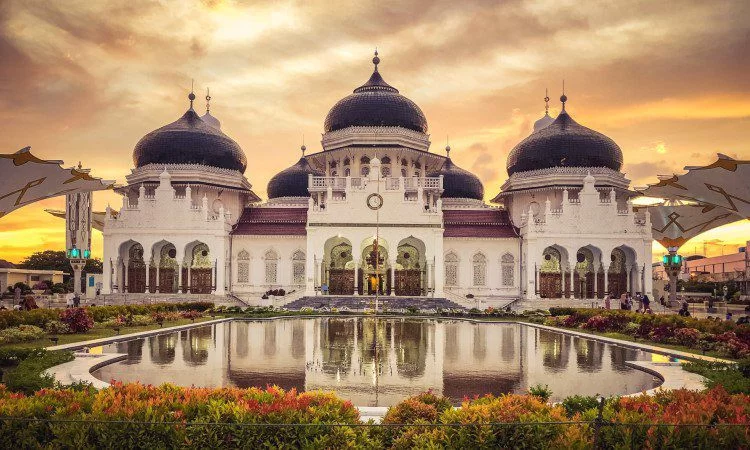

.jpg)
Pesona Bahari
Keindahan Alam Serambi Mekkah


Wonderful Aceh adalah platform website yang menyajikan informasi lengkap seputar provinsi Aceh untuk memudahkan para wisatawan mengenal, menjelajahi, dan memahami kearifan lokal Aceh dengan lebih dekat.
Informasi praktis dan etika berkunjung bagi wisatawan luar Aceh, seperti tata cara berpakaian dan tata krama lokal.
Katalog lengkap tempat ikonik di Aceh—mulai dari wisata sejarah, wisata alam, hingga kuliner terpopuler.
Kilas balik alur perjalanan sejarah provinsi Aceh dari era Kesultanan hingga masa modern secara visual.
Daftar resep autentik masakan Aceh beserta bahan dan langkah pembuatan untuk dicoba di rumah.
Panduan dan ketentuan pelaksanaan Syariat Islam di Provinsi Aceh sesuai dengan Qanun yang berlaku untuk menjaga ketertiban dan norma keagamaan.
Wajib mengenakan pakaian yang menutup aurat dan sopan bagi seluruh masyarakat di ruang publik.
Aktivitas perdagangan dan pelayanan publik diimbau berhenti sejenak saat waktu shalat tiba.
Dilarang keras memproduksi, mendistribusikan, memperjualbelikan, serta mengonsumsi minuman keras maupun terlibat dalam segala jenis perjudian.
Menjaga batasan pergaulan antara pria dan wanita yang bukan mahram untuk mencegah perbuatan yang melanggar norma agama di tempat umum.
Wilayatul Hisbah (WH): Lembaga pengawas yang bertugas melakukan pengawasan dan penertiban.
Majelis Permusyawaratan Ulama (MPU): Lembaga pertimbangan fatwa terkait penerapan hukum Islam.